SARANAC LAKE GALLERY


"The present is only intelligible in the light of the past" -- Richard Chenevix Trench --
208 HISTORICAL PHOTOS --- AND STILL GROWING
DIVE INTO THE HISTORY OF SARANAC LAKE, NY ON THIS PAGE AND SUPPLEMENT YOUR JOURNEY WITH THE "POSTCARDS FROM THE PAST" PAGE, WHERE YOU'LL FIND MANY MORE HISTORICAL SARANAC LAKE IMAGES.
IN THE BEGINNING - THE WILDERNESS
1808-THE ROAD HOME
I n 1808 the Saranac Lake area was inhabited only by wolves, deer, bear, moose and the usual assortment of Adirondack critters. Occasionally a hunting party of Native Americans would wander through but they never stayed long. The only sound echoing through the mountains at that time was the howl of the wolves. What was to become Saranac Lake was virtually untouched by humans. In 1808, the town of Keene, NY, was established and a dam was erected in Keeseville to power a sawmill. In Burlington, VT, John Winans had just built the worlds second steamboat, THE VERMONT. This was an exciting era and, as people began moving around, new settlements began rising. With this movement of the population came the need for more roads. One road in particular led the first settlers to what would eventually be known as Saranac Lake.
1808 was the year that the West Bay to Hopkinton Road was begun. This state route was planned to run from West Bay, which is now called Westport, to Hopkinton, which is in St. Lawrence County. A crude dirt road was laid out but barely used and quickly fell into disrepair. An act was passed on April 5, 1812 to restore it but, after an inspection, it was discovered that the wooden bridge on the Saranac River, near where the Pine Street Bridge now stands, had been carried away in a flood and that so many trees had fallen across the road along the northern section that it was virtually impassable. The refurbishing was put on the back burner due to of lack of funds. On April 17, 1816 another act was passed to renovate the road and within the next few years it was completed.
This route happened to run through the "Old Military Tract" near West Bay, which had been set aside by the government for homesteading by Revolutionary War Vets. There were no takers! Because of the proximity of the road to this tract, the locals began calling it "The Old Military Road". This name stuck and was carried down through the years and some still hold the romantic notion that this road was used for military travel during the War Of 1812. Some still believe that American troops had traversed the road during the War Of 1812 and they envision hundreds of soldiers pulling cannons and supplies over the mountains and struggling to ford the Saranac River on their way North to Plattsburg. The troops, of course, never used this route during the War Of 1812. There were easier routes north.
One of the soldiers who fought in the war of 1812, however, did travel that road and he was destined to be the first settler in what is now known as Saranac Lake.
Jacob Smith Moody was born in Keene, New Hampshire, in 1787 and had participated in the War Of 1812. He fought in the Battle Of Plattsburg on September 12, 1814. Two days later, the British, who badly outnumbered our forces, hightailed it to safer ground. Four months later the battle of New Orleans was fought with the same results. The war was over and Jacob returned to his home in New Hampshire!
1819-JACOB HITS THE ROAD
Surviving the bloody war unscathed, Jacob Moody returned to work at a sawmill in New Hampshire where, in 1818, he was badly injured in an accident. Unable to continue working at his profession and having to care for his wife, Sally, and three children, Daniel, Martin and Franklin, he packed up his family and possessions and headed to the Adirondacks to seek a new life. As with all pioneers, the Moody's were an independent breed and were well equipped to deal with the rigors of Adirondack living. They were prepared to hand craft all the items necessary for long-term survival in a potentially hazardous environment. Between them, the Moody's were skilled in every facet of survival, including making clothing, trapping, hunting, fishing, collecting herbs for medicine, raising livestock, gardening, carpentry, canning and creating from available resources virtually every item required to simply maintain a day-to-day existence in the Adirondacks.
Included in the possessions they packed for the venture were, two horses, a milk cow, a pair of oxen, a crate of chickens, fishing and hunting supplies for fresh meat, carpentry tools for building a cabin and crafting the items the family needed to survive and Jacob's small library. The Moodys traversed the new West Bay To Hopkinton Road, which had just been completed and in the spring of 1819, Jacob and family arrived at an area that suited them. The abundance of wild game and the beautiful scenery provided by the lakes, mountains and forests were even more than they had expected. This would be their new home.
The family first settled near where Park Avenue is now located. This area was later called Highland Park. Unable to gain title to that land, the family cleared 16 acres in the area now known as "The Pines". This parcel included Moody Pond and the lot where Pine Ridge Cemetery is now located. The Moodys built a modest cabin and tended the family garden, which was located where the cemetery is now.
This time their claim went through and shortly thereafter, Cortez Fernando Moody was born. Cort was the first child born in the new settlement, which would eventually be known as Saranac Lake.
Jacob was an avid reader and history was his main interest. He was a big fan of Cortez, the conqueror of Mexico and that's why Cort was blessed with a strange name for an Adirondack Mountain boy. It appears that Cort wasn't bothered by this name, because he passed it down to his first born son. Jacob and Sally bore three more children after Cortez. They were Eliza, Harvey and Smith.
Jacob and Sally, The first settlers of Saranac Lake, were eventually blessed with twenty three Grandchildren.
Life was difficult in those early years of the settlement and Eliza and Franklin both died young and had no offspring.
Harvey fathered eight children; Simeon, Phineas, Polly, William, Alonzo, Fayette, Richard and Robert.
Smith had five; Armedie, Benjamin R., Hiram S., Sarah and James.
Daniel had four; Alarie, Delbert, Vertner, and Lizzie.
Cortez fathered six; Jacob S., Cortez, James, Frank, Abe and Milo. (Jacob S., Son of Cortez & Martha, died July 5, 1852 at age 5 yrs 5 mo 5 days. His monument is the oldest at Pine Ridge Cemetery. His grandfather died ten years later.)
As the Moody family grew, Jacob built a house at 154 River Street, I believe that later this was the site of the River Street School, and lived there for the duration of his life. He eventually passed the home on to his Grandson, Benjamin.
FIRST A LITTLE PERSONAL HISTORY
My Great Grandfather, John Q Foster and Jacob Moody's son, Milo Moody, were good friends and often worked together as guides in the late 1800's and early 1900's. Here are a few pics of John Q.
--EARLY ADIRONDACK GUIDES--MY GREAT GRANDFATHER, JOHN Q FOSTER (1) AND MILO MOODY (2)-1889-
 --JOHN Q FOSTER AND MILO MOODY -1889-
--JOHN Q FOSTER AND MILO MOODY -1889-
JOHN Q FOSTER DONS HIS STEALTH MOCCASINS TO PREPARE FOR THE HUNT.-1888-
JOHN Q FOSTER PAUSES FOR A PIC BEFORE AN OUTING IN THE WOODS
JOHN Q FOSTER IN HIS YOUTH-1876-
JOHN Q AND MY GREAT GRANDMOTHER, ALVIRA-1920-
John Q wasn't the first Adirondack Guide in the family. My Great Great Grandmother, Cynthia Rogers Stanton, also married an Adirondack Guide. His name was Samuel Dunning. Sam was a friend of Jacob Moody and was a very well respected Adirondack Guide. He worked for Verplanck Colvin doing the original survey of the Adirondacks. Below is a picture of Sam and his interesting obit from an 1895 Elizabethtown Post. They really wrote GREAT obits back then!! John Q Foster's obit is from a 1924 Adirondack Enterprise.
HERE ARE SAM DUNNING AND HIS SON, DOUG, TAKING A BREAK AFTER DOING SOME GUIDING FOR VERPLANCK COLVIN
SAMUEL DUNNING AND JOHN Q FOSTER'S OBITS (PLUS VERPLANCK COLVIN)
THE LATE 1800'S AND 1900'S
SARANAC LAKE'S ONE MAN CHAMBER OF COMMERCE
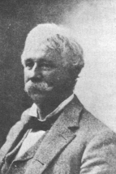
W illiam H. Murray is the man who had the greatest influence on the growth of Saranac Lake as a tourist area. Without the benefit of TV, radio, or the web, this unofficial P.R. man for the Adirondacks single-handedly publicized Saranac Lake, at that time an insignificant little logging village, to the extent of causing it to rise from virtual obscurity to attaining an overnight reputation as a stellar tourist destination and health resort.
W.H.H. MURRAY, better known as ADIRONDACK MURRAY, was truly a great P.R. man for Saranac Lake and a convincing writer. In his 1869 book, "ADVENTURES IN THE WILDERNESS" or "CAMP LIFE IN THE ADIRONDACKS", he romanticized life in the Adirondacks to the point of creating a phenomenon known as "MURRAY'S RUSH". The "SPORTS" who thronged to Saranac Lake were often called "MURRAY'S FOOLS" by the locals. Saranac Lake benefitted greatly from the sudden demand for living accommodations, food, outdoor clothing, etc., which were required by these overenthusiastic hunters and health seekers. Stores, hotels and guides were quickly established to accomodate the throngs of visitors.
Adirondack Murray's stories extolled the benefits of fresh air and exercise in maintaining good health and promoting healing of the body and soul. Smog suffering city dwellers came in droves to take the cure. Murray's publicity provided a pivotal point for the future of Saranac Lake and formed the catylyst which eventually led to the era of "The Golden Age Of Saranac Lake".
THE GOOD DOCTOR MAKES A HOUSE CALL AND STAYS
T rudeau Sanatorium, or Cottage Sanatorium, as it was originally called, began in 1884 when Dr. Edward Livingston Trudeau built a small cottage called "LITTLE RED" on Preacher's Hill, later named Mt Pigah, to house two women who were suffering from TB. From then on the facility grew and Saranac Lake became world reknown as a health resort. Dr. Edward Livingston Trudeau first came here to visit, after reading Murray's book, then returned to cure his own T.B. and stayed to cure others. He died in 1915, leaving behind a great legacy which includes the Trudeau Institute. Another legacy is his Great Grandson, Pulitzer Prize winning cartoonist, Garry Trudeau.

 George E. Colon, early Adirondack Guide
George E. Colon, early Adirondack Guide
Here's a little history on how E.L.T. got here. An eye-witness account from George E. Colon, Adirondack Guide.
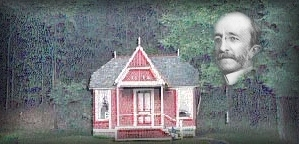
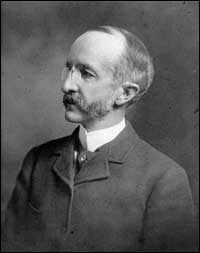
LITTLE RED - THE FIRST CURE COTTAGE
MORE CURE COTTAGES FROM HISTORIC SARANAC LAKE
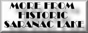
TRUDEAU SANATORIUM
TRUDEAU SANATORIUM 2
TRUDEAU SANATORIUM 3
TRUDEAU SANATORIUM 4
TRUDEAU SANATORIUM LIBRARY
TRUDEAU CHAPEL
TRUDEAU SANATORIUM FROM ABOVE
TRUDEAU SANATORIUM POST OFFICE
ANOTHER TRUDEAU SANATORIUM AIR VIEW
E.L. TRUDEAU'S FUNERAL--1915--ST.LUKE'S
ROBERT LOUIS STEVENSON
ROBERT LOUIS STEVENSON SPENT THE WINTER OF 1887-1888 IN THE BAKER COTTAGE IN SARANAC LAKE

 ROBERT LOUIS STEVENSON COTTAGE
ROBERT LOUIS STEVENSON COTTAGE
HERE'S A JULY 26,1915 ARTICLE FROM THE NEW YORK TIMES CONCERNING THE ESTABLISHMENT OF THE ROBERT LOUIS STEVENSON MEMORIAL.
ROBERT LOUIS STEVENSON MEMORIAL (PDF)
RLS COTTAGE 2
MORE ON RLS
1800'S ST LUKE'S CHURCH
THE VILLAGE GROWS AND PROSPERS
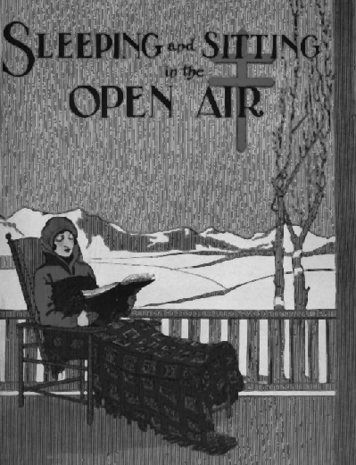
Below is one of the first pictures of Saranac Lake. It was taken in the middle 1800's. At this time Saranac Lake was a small logging community with only a few simple houses. The Berkley Hotel had already been built, as seen in the background and Blood's Hotel can be seen at the middle right.
EARLY VILLAGE OF SARANAC LAKE-1800's
Here's a later shot from the same location.
EARLY VILLAGE OF SARANAC LAKE-1897
In 1827 Captain Pliny Miller built a dam on the Saranac River to provide power for a sawmill and ultimately create electricity for the village. This created Newell's Pond, which was later named Lake Flower.
THE SARANAC LAKE DAM (around 1827)
THE SARANAC LAKE DAM A FEW YEARS LATER
This is an 1897 shot of the Harrietstown Town Hall. It was built in 1888 and it burned on July 26,1926.The Adirondack Enterprise was located in the basement at the time of the fire. In this photo D. LOHNA'S MARKET, (CHICAGO DRESSED MEATS), occupied that space. On the left, where THE WATERHOLE is now located, is LAWRENCES LIVERY. The next building down is the Spaulding Block and at that time the WESTERN UNION was located there. The telegraph office moved across the street in 1908.
EARLY HARRIETSTOWN TOWN HALL
Here's the same view a few years later. Note the new building in front of the Town Hall and the addition beside the Waterhole where the drug store and Sam Edelberg's Tailor shop was located.
HARRIETSTOWN TOWN HALL
ANOTHER VIEW OF EARLY HARRIETSTOWN TOWN HALL
ADIRONDACK GUIDES AT TOWN HALL
This is another view of the original town hall with a band and what appears to be a group of judges. The Spaulding Block can be seen behind the stagecoach and you can see the F.C. Lamy Watch Repair sign belonging to Ferdinand Claudius (Fred) Lamy, father of skaters Ed And Claude Lamy. Ferdinand arrived in Saranac Lake in 1884 from Lyons, France. The gentleman on the horse is believed to be Dr. Baldwin, an important member of the TB community.
TOWN HALL
There were several bottling plants in Saranac Lake throughout the early years. One of them was Isaac Merkel and Sons. Isaac later sold the plant to Frank Stark. Merkel's also had a liquor bottling plant in Plattsburg and established Merkel's Department Store.(Click photo to enlarge)
I.MERKEL & SONS, BOTTLERS
POP WALSH,THE SPAULDING BLOCK AND THE MURDER AT BLOOD'S HOTEL

THE SARANAC LAKE LOYAL ORDER OF MOOSE BAND 1930's
This pic, sent in by Rudi Snyder, is of the Saranac Lake Moose Band circa 1930. If you recognize any of the musicians or can furnish any info on this group please drop me a line.
THE NATIONAL GUARD 1950
Here is the Saranac Lake National Guard marching in front of the new town hall in 1950, probably Independance Day. Note the Spaulding Block on the right, behind the Texaco station. Al Shortt bought the Spaulding Block in 1955, demolished it, and built a larger Texaco station in that space. Note police chief Bill Wallace at left.
This photo was taken on the Fourth of July, 1896. It's a shot of the Woodruff Hose Company during an exhibition hose drill in front of the original town hall. There were two Saranac Lake Fire Departments in operation at this time. (Woodruff Hose Company and Miller Hose Company) They're performing to an interested crowd of Saranac Lake folks. They were using hand drawn carts at this time but a few years later employed modern, horse drawn carriages. In 1911 the present fire house was built and both companies shared the building and equipment for several years before uniting as the SARANAC LAKE VOLUNTEER FIRE DEPARTMENT. By 1920 they had aquired a motorized fire truck.
WOODRUFF HOSE COMPANY NO.1 DRILL
Note the Spaulding Block on the right with the ladies on the roof. This was once the home of the Independent Order Of Grand Templars, Pop Walsh's Cigar Store, the A&P, Dick DeSantis' Riverside Grill, and a few other businesses.
Below is a document honoring an early firefighter, Cassius M. Ladieu, who had died in the line of duty in 1893, three years before the above picture was taken. This eulogy was printed in the Elizabethtown Post several years before the advent of "THE SARANAC LAKE NEWS", the first newspaper in Saranac Lake. The Saranac Lake News was consolidated with another local newspaper, "THE ITEM" and subsequently taken over by "THE ADIRONDACK ENTERPRISE" in 1919. The Elizabethtown Post, The Essex County Republican and the Adirondack Pioneer were the only newspapers dealing with local issues at that time:
From the Elizabethtown Post and Gazette, Thursday, August 24, 1893
8/24/1893
RESOLUTIONS OFFERED by the WOODRUFF HOSE COMPANY NO.1
Whereas, it has pleased Almighty God in his infinite wisdom and power to call from our midst our beloved comrade and officer, CASSIUS M. LADIEU, be it therefore
RESOLVED, That the members of the Woodruff Hose Company No. 1 do deeply and sincerely mourn the loss of our faithful friend and brother and that we extend to his deeply afflicted wife and family our heart felt sympathy in this, their bereavement, and be it
RESOLVED, That in the death of First Assistant Ladieu, this company has lost a worthy and honored member whose memory will be cherished in our hearts not only as a friend and comrade, but as a brave and valiant fireman, and be it further
RESOLVED, That the bell, hose-rooms and equipments be draped in mourning for 30 days, and that those resolutions be placed upon the minutes, a copy be sent to the family of the deceased,, and that they be published in the Adirondack Pioneer, Essex County Republican and Elizabethtown Post.
R. H. McIntyer
Wm. F. Mannix
Seaver A. Miller,
Com. On Resolutions
Saranac Lake, NY
Sadly, the Saranac Lake Volunteer Fire Department was again faced with the loss of a fellow firefighter when on June 27th, 1954 Tommy Fina, potential Olympic speed skater, was fatally electrocuted while moving a fallen power line. Tommy was only 21.
MILOTE BAKER, A FOUNDING FATHER
STAGECOACH DAYS IN SARANAC LAKE
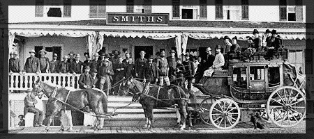
From 1855 to 1892, when "WEBB'S GOLDEN CHARIOT ROUTE" (later bought by NY CENTRAL RAILROAD), laid tracks to Saranac Lake, the village depended on the stagecoach for travel, mail, parcels, medicine and news. The plank and dirt roads the coaches navigated were rough, usually muddy or covered with snow and always treacherous. It's no overstatement to say that the drivers of these coaches were a special group of men. They had to be reliable, tough and know how to control a team of horses under any circumstance. They were expected to maintain their tight schedules whether it was raining or snowing and often after dark, with no headlights at all. Amazingly, throughout the entire reign of the Saranac Lake stagecoach there wasn't one fatal accident.
It seems a memorial of some sort would be appropriate to honor these stalwart drivers. They were an important facet in the history of Saranac Lake and shouldn't be forgotten.
Here is a list of the drivers: Fitch O'Brian, George Meserve, John J. Miller, Gabriel Manning, William Harper, Ed Harper, Henry, McQuillan, Phil McManus, Matt Miller, Charley Reynolds, Fred Cook, Dan McKillip, Billy Hinds, George Derby, Charles J. Greenough, William G. Burt, Tuffield Latour, Al Bronson and Isaiah Vosburgh.
Interestingly, Tuffield Latour later operated a large livery in the village and in the early 1900's owned the first "horseless carriage" in Saranac Lake. It took four or five hours to travel from Saranac Lake to Malone in this vehicle. The debut of this high-back Franklin eventually ended the days of horse drawn transportation in Saranac Lake and led to Tuffield establishing The Latour Fuel Company. SOMEONE had to fuel up these infernal gas-guzzling tin Lizzies!
THE SARANAC LAKE STAGECOACH
TUFFY LATOUR AND HIS STAGECOACH AT THE HOTEL AMPERSAND
THE SARANAC LAKE STAGECOACH ENTERING THE VILLAGE
THE SARANAC LAKE STAGECOACH AT MARTIN'S HOTEL
SARANAC LAKE STAGECOACH DRIVER, GEORGE MESERVE
STAGECOACH DRIVER, CHARLIE GREENOUGH AND WIFE IDA
THE SARANAC LAKE STAGECOACH AT THE TOWN HALL
Note Grimmesey Cottage in the background.
GRIMMESEY COTTAGE / VILLA DORSEY 1914
The Grimmesey TB Cottage was located at 51 Dorsey Terrace on the hill overlooking Dorsey Street. It was built in 1889 by "The Hermit Of Ampersand Mountain", Walter Channing Rice. Two early guests were The Dorsey sisters, who the streets were named after. In 1911 it was sold to Florence Merry, who renamed it Villa Dorsey. Former Governor of NY and later, President Grover Cleveland and his wife were former guests at the Grimmesy Cottage. In 1938, this bit of history was torn down.
THE LINWOOD COTTAGE--1900'S
The LINWOOD COTTAGE was located where the Sears parking lot is now. It was built in 1881 by Ms. Arvilla E. Blood, sister of Orlando "Lou" Blood, who owned the Riverside Inn. Blood bought the land from Armitus Ling, who ran a cottage there, along with a similar cottage in Lake Placid. The following year Susan B. Nelson bought the Linwood from Blood for $8,000. In 1894 it was sold to Almina G. Mantz for the same sum. In 1899 Lillian F. Angleman bought the cottage for the very same price. Richard and Lillian Johnson bought it in 1901, again paying $8,000. (No inflation in those days!) The Johnson's added a livery stable and barn in the rear, as you can see in the background of the pic. In 1920, Rose Bruzzo purchased the Linwood and ran it as a boarding and rooming house for another thirty years. Mrs. Bruzo was the one who gave the Linwood it's name. Her son-in-law, Pascal and her grandson, who was the only child ever born in the building, both had the same name and she used their middle name, Linwood, for the cottage. Pascal Linwood Jr. died serving in WW2.
In 1950, Mrs. Bruzzo died leaving the building to her son-in-law, Pascal "Patsy" Urgo. Patsy had earlier owned and operated an Italian Restaurant where the Vet's Club is now located. He had sold the restaurant building to the Veterans Club for one dollar after his son, Pascal Jr., was killed during WW2.
In 1953 the cottage was gutted and in 1954 the remains were finally burned and all that wouldn't burn was bulldozed into a hole and covered. Eventually the whole area was blacktopped for use as the Newberry's parking lot.
Many notables visited the Linwood during it's heyday, including Ernie Burnett (Melancholy Baby), Christy Mathewson, Jack Dempsey and Governor Roswell Flower, who acquired state funds to dredge the river and produce what is now known as Lake Flower.
RIDING THE RAILS
ORIGINAL SARANAC LAKE TRAIN DEPOT Thanks to Robert Reid
ENGINE #3050 IN MALONEThanks to Jack Vivlamore
SARANAC LAKE LOCOMOTIVE 4459
SARANAC LAKE LOCOMOTIVE 4515
CALVIN COOLIDGE ARRIVES AT SARANAC LAKE TRAIN DEPOT Thanks to Robert Reid
CALVIN COOLIDGE AT THE SARANAC LAKE PRESBYTERIAN CHURCH,1926
This shot gives you an idea of the amount of logging done up the Saranac River. The logs were floated downstream to the sawmills located on what is now Lake Flower.
LOGGING ON THE SARANAC
Here's River Street before the two, then four and now three lane highway was built.
RIVER STREET
The following six pics were taken from Blood Hill in 1890. Blood Hill is behind what is now the high rise on Riverside Drive and included what is now Lake Street Hill. There was once a ski jump located on the area above where the high rise is now located. Blood Hill wasn't named because of the reputation of the ski jump but after Orlando Blood, who had purchased what was called first, "Blood's Hotel" then "The Riverside Inn", from John J Miller in 1865 along with eighty acres of land in Saranac Lake for $2,115. The village was often referred to as "Bloodville" for some time after that.
BLOOD HILL VIEW 1
BLOOD HILL VIEW 2
BLOOD HILL VIEW 3
BLOOD HILL VIEW 4
BLOOD HILL VIEW 5
BLOOD HILL VIEW 6
SKI JUMPING ON BLOOD HILL IN SARANAC LAKE-1918
A VIEW OF THE SARANAC LAKE SKI JUMP FROM BELOW
ANOTHER VIEW OF THE SARANAC LAKE SKI JUMP
The shot below was taken from behind the Riverside Inn, then called Blood's Hotel.
LOGGING
This view is looking up from Newell's Pond, which, sometime after 1892, was named Lake Flower in honor of Governor Roswell Pettibone Flower, Democrat, who served from 1892 until his death in 1899. River Street, Church Street and Shepard Avenue can be seen from here.
A VIEW FROM LAKE FLOWER
SARANAC LAKE AD FROM TIME MAG 1938
CURLING CLUB OF SARANAC LAKE
This scene was snapped from Mt Pisgah around 1890. Mt.Pigah was called, at various times, Jenkins' Hill, Preacher's Hill and Preacher Smith's Hill.
VIEW FROM MT PISGAH/PREACHER'S HILL
THE REVENGE OF THE FOXES
Dr. E.L. Trudeau enjoyed hunting foxes on Mt.Pisgah. It would appear that the unidentified hunter in this photo took more than his share of these cunning critters but he obviously missed a few as there have been reports from the residents of the North side of the mountain of being harassed by their offspring. They seem to be taking revenge for their ancestors' unfortunate demise by attacking innocent house pets. Bear, deer and the occasional moose still roam the mountain and make life a little more interesting for the residents from both sides of Pisgah. Lately many of us have been pleasantly surprised to see deer grazing on our lawns and I witnessed a herd of eight young deer strolling casually down Catherine street one morning last summer. A nice way to start your day.
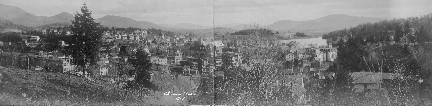
This panoramic scene was taken from the hill above Dorsey Street in 1902. I separated it for easier viewing.
LEFT VIEW
RIGHT VIEW
This is a closeup of the foot bridge behind the town hall, thanks to Dave Martin
 OLD FOOT BRIDGE
OLD FOOT BRIDGE
This shot was taken from the Helen Street Hill vicinity.
LOOKING DOWN HELEN HILL
This is the Haase Building in 1909. It is located at 60-64 Main Street. At the time of this photo it contained Finnegans clothing store, then called "The Haberdasher", a dentist, notary public, architect's office, a milliner, and a few other offices. This building replaced the Reuben Reynolds Cottage, where Dr. E.L. Trudeau spent his first winter in Saranac Lake (1876) with his wife, Charlotte ("Lottie") and his children, Ned, Chatte and Francis. The cottage was torn down around 1908. The Haase building now houses the ADIRONDACK BANK.
HAASE BUILDING
ODD FELLOWS HALL 1921, NOW THE HOTEL SARANAC PARKING LOT
This dramatic shot is of the burning of Saranac Lake's first Catholic Church. It was built in 1893. It burned on St. Patrick's Day 1909.
FIRST CATHOLIC CHURCH FIRE
On June 14, 1910 the cornerstone for the new St Bernard's Church was laid. This Church was to replace the wooden building which had gone up in flames. Inside the hollowed out marble cornerstone was a copper box with records and data of the church. On the outside of the stone was the inscription, "ECCLESIA S. BERNARDI". Beneath that was a Roman cross and under that was the date, MCMIX. (I wonder where that ended up?) Bishop Henry Gabriels, (who Gabriels San was named after) Rev. Bernard Marron, (pastor of St. Mary's Church at Potsdam, which St. Bernard's was patterned after) and 21 other priests officiated. The only difference in the two churches is that St. Mary's Church, in Potsdam, was made of sandstone blocks and St. Bernards was built from Vermont marble. It was designed by Saranac Lake architects Coulter and Westhoff and built by Tanzini Construction with expert stonemason Faravonti Saroni doing the stonework for the altar. It was open for services on November 30th 1911 and completed in 1912. This one burned on December 5th,1967.
ST BERNARD'S CATHOLIC CHURCH
THIS SHOT OF THE WATERHOLE WAS TAKEN IN 1918. (Thanks to Rudi Snyder.)
WATERHOLE WHEN IT WAS A TIRE HOSPITAL
THIS SHOT OF THE INSIDE OF THE WATERHOLE SHOWS THAT IT WAS ALSO A SMOKESHOP AND SHOE STORE (1930). (Carl Puccini (left) and Mike Mitchell, who later opened Mike and Sandy's) IN 1918 IT WAS WASHER'S TIRE HOSPITAL (VULCANIZING) IN 1925 IT WAS THE WASHINGTON MARKET AND EARLIER, LAWRENCE'S THEN RYAN'S LIVERY STABLE.
THE WATERHOLE WHEN IT WAS A SMOKESHOP - Carl Puccini on the left and Mike Mitchell on the right
DEDICATION DAY OF THE OLD SLHS
OPENED SEPTEMBER 1892 BY PRESIDENT BENJAMIN HARRISON, THE HOTEL SARANAC IS NOW LOCATED ON THAT SPOT. NOTE THAT THE BELFRY ISN'T YET COMPLETE.
THE BERKLEY HOTEL, POST OFFICE, BIJOU THEATER AND WINE SHOP
Here's a shot of the Berkley Hotel in 1890. It was built in 1876 by Milo Miller and burned down in 1981.
1890 BERKLEY
DOWN BERKLEY HILL
This pic of the Berkley was taken on the Fourth of July, 1890. On the left is Fowler's Livery, Carey's Clothing and the William Hennessy Harness Shop.
THE BERKLEY ON THE FOURTH
LATER BERKLEY HOTEL
This shot was taken from the Berkley around 1890. Note the post office on the lower right. This was the second location of the post office. Also note the large stone on the left. This stone can also be seen on the high school dedication scene above. A VIEW FROM THE BERKLEY HOTEL
This is a detailed image of the above view.
A DETAILED VIEW FROM THE BERKLEY HOTEL
BERKLEY SQUARE CHRISTMAS TREE-1940-
ANOTHER VIEW OF THE BERKLEY SQUARE CHRISTMAS TREE-1920's-
BERKLEY SQUARE IN THE 70's
BERKLEY HOTEL FIRE-1981
BROADWAY FROM THE HOTEL SARANAC ROOF-1984
PONTIAC THEATRE--1950
Here's a nice shot of the Pontiac Theatre taken by Harold Eby, who operated a photo studio here for years. Note Tony Anderson, second from the left. Tony was a great mayor for many years and also operated the Pontiac Theater, which featured first-run movies, often before they were shown anywhere else. This shot was taken during a series of live vaudeville shows which, as you can see by the long line, were very popular. The Anderson Band Shell was named in Tony's honor.
The building was designed by architects Scopes and Fuestmann and was built in 1917. It originally included two storefronts, a bowling alley and a billard room. In 1926, the owners, the Pontiac Theatre Corp., sold to the Schine chain and later was purchased by the Pontiac Entertainment Corp.
KATHERINE HOCTOR DRESS SHOP--1940
Here's a pic of Katherine Hoctor's Dress Shop at 25 Broadway and the corner of Woodruff Street. That's her father, James Collins, in the foreground. Note the Wilson's Clothing Store on the right, in the Dukett building. (Thanks to Rudi Snyder)
EARLY LOOMIS BUILDING
Here's an early pic of the Loomis Block, later called the Downing Block. It was built by Fred Loomis around 1897. The top floor has since been removed due to a fire.
RYAN FRUIT COMPANY TRUCK--1940
The Ryan's Fruit Company used to keep the local stores stocked with fresh fruits and vegetables picked up daily in NYC with this truck. (Thanks to Rudi Snyder)
CANADIANS INVENTED FIRST SNOW MACHINE??????
The picture below is of the 1911 DOODANG, an early motorized snow vehicle. It could well surpass 70 MPH. It was designed and was owned by Charles J. Swain, of Philadelphia, PA, and was constructed by the Shelly brothers at their machine shop in Saranac Lake. It was built eleven years before Canadian, Joseph Armand Bombardier, constructed what was purported to be the first motorized snow sled. Bombardier was only fifteen when he put together his first snow machine in 1922. That would make Joe only four when the DOODANG was built!! Bombardier's machine was first called a SKI DOG then renamed SKIDOO (as in DOODANG)! The DOODANG was featured in an article in MOTOR AGE and garnered a two page spread in a Sunday issue of THE NEW YORK TIMES! There was another snow sled cruising the Saranac Lakes at that time owned by Charles C. Palmer, who was interested in racing against the DOODANG. C.J. Swain had toyed with the idea of turning the snow sled into a boat for the summer. Jack Shelly, treasurer of Shelly Tool Co., also built an amazing ice airplane in 1916 and flew it on Lake Flower, although not at a great altitude.
Jack's brother, Nate Shelly, president of Shelly Tool Co., and Jack's wife were both killed in a spectacular toboggan accident near Saranac Inn in 1924.

The Shelly Machine Shop and Garage building was later the site of the LaTour Fuel Co. then, for many years, Northland Motors. It is now the location of the SARANAC LAKE ADULT CENTER.
THE DOODANG
OLD MOTOR AGE MAGAZINE ARTICLE ABOUT THE DOODANG
PAST WINTER CARNIVALS
The Saranac Lake Winter Carnival began in 1898.
HERE'S A DESCRIPTION OF THE SECOND WINTER CARNIVAL - 1899
A shot of the 1909 ice palace taken by the great local shutterbug, William "Papa" Kollecker.
1909 ICE PALACE
1909 ICE PALACE POSTCARD
This view is of the bottom of Berkley Hill, looking down Broadway and is of the 1909 Winter Carnival Parade. Note the fancy spire on the Masonic Building. Also note the early snow machine. This vehicle and the DOODANG, pictured below, were the first motorized snow vehicles. Check out the "15 cents a gallon" gas sign on the right.
1909 WINTER CARNIVAL PARADE
1910 parade from same spot as above - note rise in gas price
1910 parade - mounted policeman in front of Kolleckers Photo Shop Thanks to Robert Reid
1910 parade - Saranac Lake Fire Department
1910 parade - "The Eugenic Factory"
1910 WINTER CARNIVAL FLOAT
1913 ICE PALACE
1913 FLOAT
1913 FLOAT
1913 FLOAT
1913 PONTIAC RINK GRANDSTAND
1913 PONTIAC RINK
1913 ICE DANCING
1913 STRANGE "BONDAGE" GAME
Here's shot of the 1915 parade on River Street by "Papa" Bill Kollecker, a popular local photographer. Note the ice palace on the upper right.
1915 parade
1900's float--Old King Cole
1900's float---Tropical Island
1934 KING LOWELL THOMAS
WINTER CARNIVAL PARADE-AMERICAN LEGION WW1 FLOAT
HERE'S Main Street all spruced up for WINTER CARNIVAL.
MAIN STREET DECORATED
Here is the Hotel St Regis decorated for Winter Carnival 1909.
ST REGIS 1909
Here is Broadway around 1909.Note the Masonic Building spire.
Broadway circa 1909
Here is the Hotel St Regis decorated for Winter Carnival 1909.
ST REGIS 1909
ST REGIS HOTEL FIRE, 1964
MORE ON ST REGIS FIRE
Next to the Hotel St Regis was the Leis Building, which still stands next to the parking lot. It was purchased from Thomas J. Farrel by Henry Leis in 1903.
LEIS BUILDING
MAYOR SEAVER MILLER AND VILLAGE BOARD-1932
76 BROADWAY-NEUBAUERS MARKET AND PASCAL 'PAT' FINA'S "NEW DEAL TAVERN", WHICH OPENED AUGUST 1,1934. LATER IT WAS "DAGWOOD'S SUBS", THEN "THE BACKDOOR",THEN "SCHUES ADIRONDACK BAR AND GRILL". IT'S NOW CAPTAIN COOK'S.
1936, 80 BROADWAY, NEW BUILDING BECOMES THE HOME OF PASCAL 'PAT' FINA'S "TOWN TAVERN". NOTE TAXI STAND STILL ON THE SIDE.
PASCAL 'PAT' FINA'S "NEW DEAL TAVERN", TAX STAMP
Pat later built and operated the RIVERSIDE GRILL. He found a rifle buried in an old cellar on his property while constructing it.
PAT FINA'S RIFLE
PAT FINA'S "TOWN HOUSE" BAR LICENSE.
"SWEENEY'S TAXI", BEHIND THE "TOWN HOUSE"
THE "POTTER BLOCK" WHEN IT WAS KNOWN AS THE "ADIRONDACK HOTEL"
POTTER BLOCK 1969
This is Saranac Lake's MOUNTAINSIDE GUN CLUB in the Spring of 1906. This is their clubhouse on Moody Pond. Some of the names of the members shown are; Dr. Trembley, LLoyd, Graham, Howland, Einstein, Haase, Cluett, Brandreth, Edey, Trowbridge, Mason, Mrs. Lloyd and Miss Taylor. Note Miss Taylor at lower right seated beside a rather nervous, fidgety and UNARMED boyfriend. On the closeup of this photo (below) you can see that her finger IS on the trigger of the double barreled shotgun.
MOUNTAINSIDE GUN CLUB
This is the zoomed in version.
SMILE---OR ELSE!
This is GEORGE GRAY, who caused quite a stir when, on October 9, 1912, he landed his BURGESS-WRIGHT BIPLANE at Fletcher Farm in Bloomingdale. The next day he landed on the Hyde Farm on the Bloomingdale Road,which is now occupied by BOCES. He raced a car with his plane and gave a few rides during his stay. He later married one of his riders, Edith M. Stearns. Check out the engine and propulsion layout, this guy had GUTS!
THE FLYING MACHINE
This is another shot of GEORGE GRAY and his biplane. Note the strange dog wearing a hat and some sort of message in his mouth!
THE FLYING MACHINE
THE ICEMAN COMETH
This 1800's shot was taken near the Broadway Bridge which was renovated in 1922. Note the iron railing on the bridge and the BRADFORD-FLINT PHARMACY.
GIBNEYS MARKET 1800s
52 MAIN STREET
HOTEL DELMONTE 1894
The Hotel Delmonte was located at the corner of Ampersand Ave. and the Forest Home Road, where the St. Bernard's Cemetery is now located. In 1917 it was known as the Lakewood Inn under the ownership of William Hennessy. It was also once called the Hotel Van Dorien.
PINEHURST CAMP ENTRANCE EARLY 1900s
PINEHURST FROM THE LAKE
THE GREAT WAWBEEK HOTEL
THE GREAT WAWBEEK HOTEL 2
During WW1 Saranac Lake and the U.S.A. were just as concerned about the men who were doing the dirty work as they are today. In the next five shots we see the ceremony at Berkley Square, the parade given to the departing boys with music by the Saranac Lake Businessmen's Band and their heavily attended departure on the train. In the last shot we see the men greeted by a throng of Saranac Lakers as they return to the Saranac Lake depot after the war.
THE CEREMONY
MEETING AT BERKLEY SQUARE
THE PARADE AT CHURCH STREET
A FOND FAREWELL AT THE DEPOT
THE WARRIORS TRIUMPHANTLY RETURN
SLHS BAND IN 1939.
THE STORE ON BLOOMINGDALE AVE 1960's AND 70's, OWNED BY JIM McCLAY
A FEW EATING ESTABLISHMENTS FROM THE PAST
The "Dog House", which was located across from the St Regis Hotel, was at various times run by Chuck pandolph and Bob Bell. My favorite memories, however, were of the days Patricia Lamoy operated it and her daughter, Betty, worked the counter. I remember breaking an egg at the counter one night while demonstrating how it is "impossible" to break an egg while squeezing it between your two palms in a certain way. (It may have been a defective egg or I was "set up".) I also still remember those "Chili Dogs".
THE DOG HOUSE DINER 72 AND 74 BROADWAY (1956)- NOW A PARKING LOT TO THE LEFT OF WHAT WAS ONCE SCHUES ADIRONDACK BAR AND IS NOW CAPTAIN COOK'S.
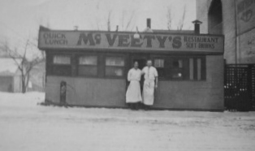
This was "McVeety's Diner", at 7 Bloomingdale Avenue, a popular eating spot in the forties. Morris Mitchel, who later operated the "White House" on the bottom of Berkley Hill is on the left. Later McVeety's became "The Miss Saranac Diner", the last place in the world with 5 cent cup of coffee, then, in the seventies, it was operated as a fried chicken place. Now you can buy lawn mowers etc. on that lot.
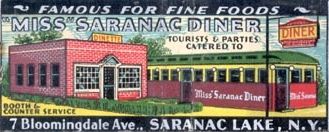
This was the original DEW DROP INN. It was taken in 1938 and was one of the first "convenience stores". It was located on the Bloomingdale Road in front of the DeMattos homestead, which is now owned by Dick trudeau. Note the Nehi signs and the name Ed Disco on the mailbox. Thanks to Jacques DeMattos, who obtained these great shots from a "snowbird" neighbor he met in Florida. Small world!
1938 DEW DROP INN 1
1938 DEW DROP INN 2
1938 DEW DROP INN 3
In the Fabulous Fifties "The Altamont Dairy Bar" was famous for the "Pig's Dinner", "Idiot's Delight", "Undertaker's Delight" and several other high calorie, but DELICIOUS, ice cream dishes. It later moved to 48 Broadway and carried on the tradition for several years. We could use a place like that now!
THE ALTAMONT DAIRY BAR, 1950's. LOCATED IN THE OLD BOWLING ALLEY BUILDING
THIS IS THE ONE AND ONLY BERNIE WILSON'S, A POPULAR TEEN HANGOUT OF THE 50's AND SIXTIES!!
BERNIE'S
THE OLD ATLANTIC STATION ACROSS FROM THE FIRE DEPARTMENT-1943
THE OLD SKATING RINK AT PETROVA
THE SKATING RINK AT PETROVA WITH BING KUNATH AND GEORGE BEDORE
SOME 1970's LAKE FLOWER SHOTS TAKEN BY RUDI SNYDER BEFORE WIDENING OF THE HIGHWAY
PONTIAC BAY BEFORE HIGHWAY WIDENING-WINTER
PONTIAC BAY BEFORE HIGHWAY WIDENING-SUMMER
SARANAC LAKE BEACH-PRESCOTT PARK FROM TYSON'S DRIVE IN
THE FINAL MOMENTS OF TYSON'S DRIVE-IN - 1978
RIVER STREET SINGS IT'S SWAN SONG
LAMY HOUSE, NOW THE BOAT LAUNCH PARKING LOT, TORN DOWN TO WIDEN RIVER STREET
NORTH FOYER LTD--THE 70's--CORNER OF RIVER ST AND SHEPARD AVE.
ANOTHER VIEW OF THE LAMY HOUSE-ARMORY IN BACKGROUND
HERE ARE A COUPLE OF SHOTS OF THE SAME AREA TAKEN FROM THE BRIDGE IN 1956. THANKS TO JACK VIVLAMORE.
LAKE FLOWER, SUMMER 1956
LAKE FLOWER WINTER 1956
Here's that great Berkley Square panorama taken by Steve Schnibbe-circa 1995-(click to enlarge)
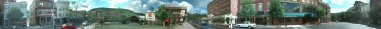
SARANAC LAKE FROM THE AIR--1940
HERE'S ANOTHER ANGLE---1940
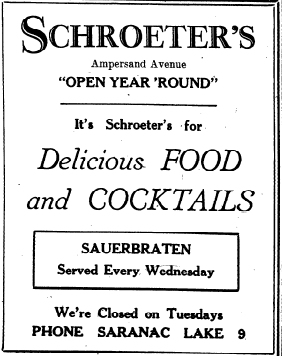
AN AD FOR SCHROETER'S RESTAURANT, ONCE LOCATED NEXT TO IT'S NAMESAKE, "SCHROETER'S FIELD". IT BURNED IN THE SUMMER OF 1973.

Do you remember the carnivals at Schroeter's Field?
SCHROETER'S RESTAURANT
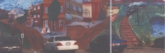
This mural of Saranac Lake was painted on the old Newberry's building by the SLCHS art class led by Doc Ward in 1996. It was removed when the building was remodeled for the Sears store and Lori's Health Den. Thanx go out to Arion Vincent for giving me the year it was painted.
VIEW THE LEFT SIDE
VIEW THE RIGHT SIDE
MORE OF THE SEVENTIES BY RUDI
MARK'S GRILL AND DEW DROP INN WITH PONTIAC THEATER AND BERKLEY HOTEL IN BACKGROUND
"POP" WALSH'S, WESTERN AUTO AND THE BOOKSTORE--NOW THE OWLS NEST, GRIZL-T'S AND THE BLUE MOON
TEMMING ART STUDIO--NOW MORGAN'S 11
REMEMBER THOSE ROMANTIC GONDOLA RIDES TO THE BELVEDERE RESTAURANT?
OLD SARANAC LAKE TOURIST STICKER
DEL'S LIQUOR STORE AD
ANOTHER VIEW OF SARANAC LAKE
STONY WOLD
Built in the first decade of the 1900's, the chapel building on Lake Kushaqua is in an area that was once "Stony Wold Sanitarium" and had been the community hall, chapel and movie theater for the Tuberculosis treatment center and was later to become the chapel for the "White Fathers". The White Fathers were medical missionaries to the middle east, originally from France and known for their white robes. Stony Wold Sanitorium near Saranac Lake "was opened by a Trudeau admirer to treat working girls in the initial stages of tuberculosis. Stony Wold was an important influence on the financial growth of Saranac Lake during the "TB YEARS". The Tiffany windows, seen in these photos, are now installed at the New-York Historical Society Museum at Central Park West and 77th Street. They are on the stair landing area on the third floor. Does anybody have any info on the fate of the "Black Jesus" figurine?
WHITE FATHERS AT STONYWOLD ON LAKE KUSHAQUA
WHITE FATHERS CHAPEL
INSIDE WHITE FATHERS CHAPEL
WHITE FATHERS MAIN ALTAR
CLOSEUP OF TIFFANY WINDOWS AT WHITE FATHERS MAIN ALTAR
ANOTHER CLOSEUP OF TIFFANY WINDOW IN WHITE FATHERS MAIN ALTAR
WHITE FATHERS SIDE ALTAR
CLOSEUP OF TIFFANY LEFT SIDE WINDOW IN WHITE FATHERS CHAPEL
ANOTHER VIEW OF TIFFANY LEFT SIDE WINDOW IN WHITE FATHERS CHAPEL
CLOSEUP OF TIFFANY RIGHT SIDE WINDOW IN WHITE FATHERS CHAPEL WITH ST LUKE
THE TIFFANY WINDOWS AS INSTALLED AT THE NYC HISTORICAL SOCIETY
WHITE FATHERS BLACK JESUS
LAKE KUSHAQUA SANATORIUM
THE AMPERSAND HOTEL
GABRIELS SANITARIUM
Gabriels Sanitarium was established in 1895 on land in Brighton, which was later called Gabriels NY. The land was donated by Paul Smith. It was run by the Sisters Of Mercy for the care of TB patients and named for Reverand Henry Gabriels. Gabriels was the first to admit black patients. The Sanitarium was closed in 1963 and the land sold to Paul Smith's College. It is now a prison, as is Ray Brook Sanitarium, just outside of Saranac Lake.
GABRIELS SANATORIUM CHAPEL AND CONVENT
GABRIELS CHAPEL
ST JOHN'S IN THE WILDERNESS AT SARANAC INN
HERE'S ANOTHER ANGLE OF ST JOHN'S
SARANAC INN
HERE'S ANOTHER ANGLE OF SARANAC INN
President Grover Cleveland spent several summers in one of the Saranac Inn cottages owned by Thomas Blagden. The Saranac Inn was built by a Mr. Hough in 1864 and called "Hough's". Mr. Hough wasn't a great hotel man and lost it in 1875. Ed Derby ran it more successfully until his death in 1884 when his widow took over. She ran it for two seasons with Edward L. Pearce as manager. E.L. Pearce later managed the "Saranac Club".
Mrs. Derby sold out in 1886 to Dr. Samuel Ward and he and a group of associates formed "The Upper Saranac Association" which bought Township 20, McComb's Purchase, Great Tract 1, which included fifty lakes on 26,880 acres.They dammed up Big Clear Pond and put up a sawmill and renamed "Hough's" as the "Saranac Inn".
PRESIDENT GROVER CLEVELAND AT SARANAC INN

THANKS TO JON KOPP FOR THE CLEVELAND COTTAGE IMAGES BELOW
GROVER CLEVELAND'S COTTAGE AROUND 1890 (MOST LIKELY A STODDARD PHOTO)
GROVER CLEVELAND'S COTTAGE AROUND 1910
 PAUL SMITH'S HOTEL
PAUL SMITH'S HOTEL
The Paul Smith's Railroad Line utilized a unique side trolley system. The photo of the RPO car was taken about the time of abandonment in 1936. Note Paul Smith's Hotel in background and store on left.
Paul Smith's Electric Railway
THIS UNIQUE BUILDING IS LOCATED IN ONCHIOTA
HOTEL RILEY IN GABRIELS
RAFFERTY'S GENERAL STORE IN GABRIELS
METHODIST CHURCH IN BLOOMINGDALE
EPISCOPAL CHURCH IN BLOOMINGDALE
BALDWIN'S STORE IN BLOOMINGDALE
FROM REDSKINS TO RED STORM